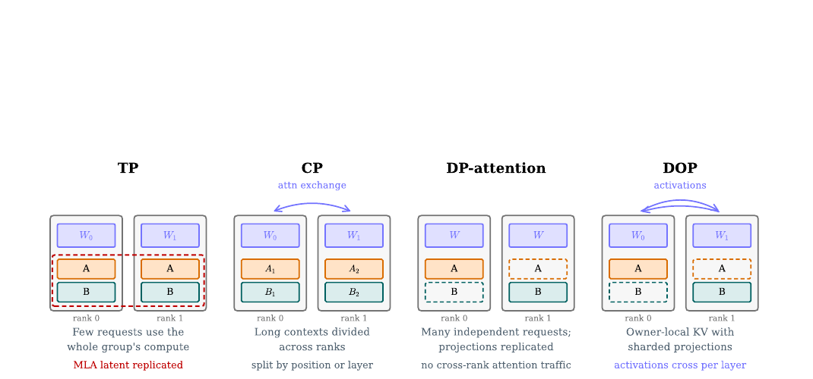
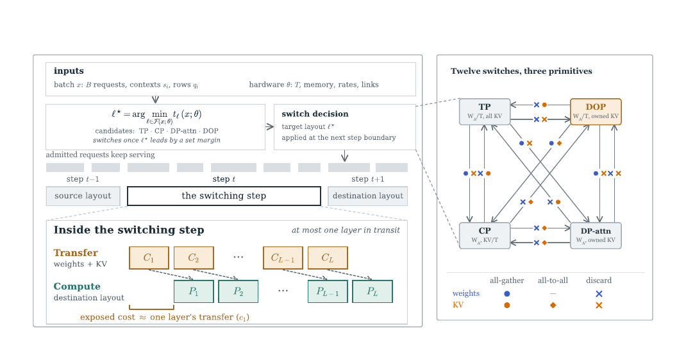
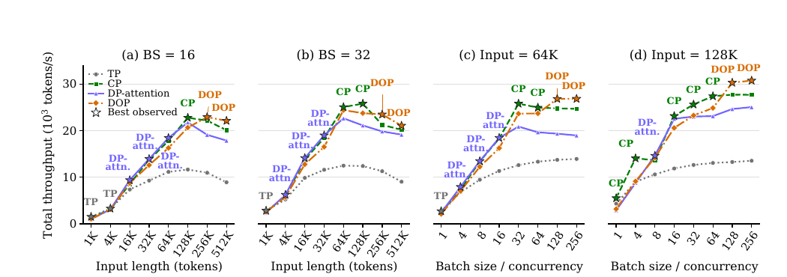
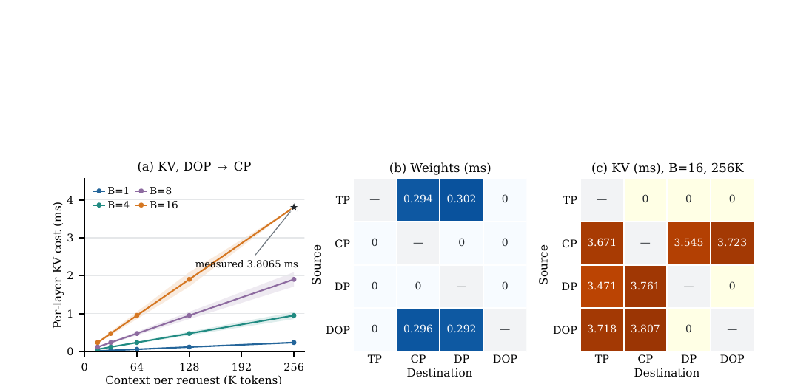
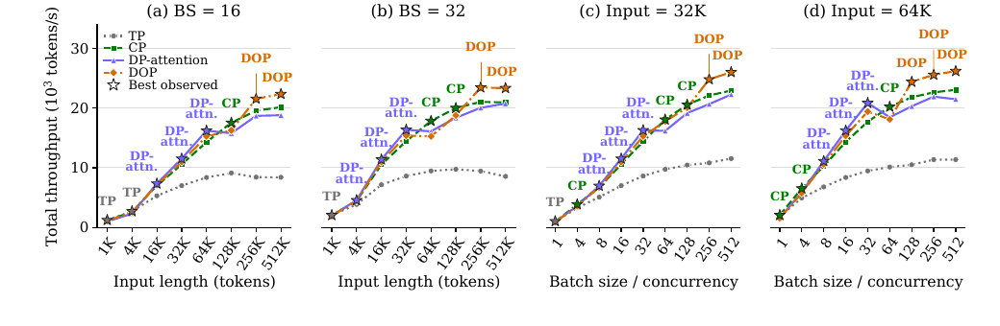
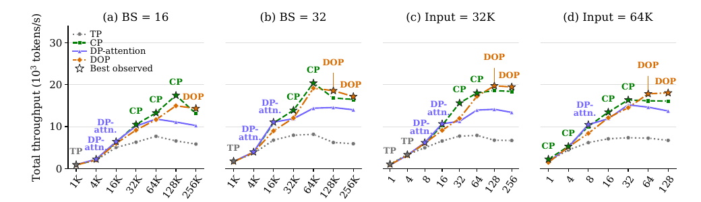

SPLASH: Switching Parallel Layouts of Attention with Seamless Handoff for LLM Serving
推理服務的最佳 attention parallel layout 會隨著並行請求數與上下文長度改變，但 KV cache 是持續成長的可變狀態，讓傳統系統只能在 drain batch 後重啟。SPLASH 把 layout 拆成「投影權重放哪裡」與「KV 歷史由誰擁有」兩個決策，據此導出零冗餘的 Decoupled Ownership Parallelism（DOP），再把缺少的權重與 KV 逐層搬移並與前一層計算重疊。
在 B200／GLM-5.3 的固定-layout 掃描中，TP、DP-attention、CP、DOP 都各自贏過一段負載區域；12 種 live switch 的 p50 額外時間為 0.02–11.76 ms。論文並主張動態追隨最佳 layout 可較固定部署提高 1.3–1.73× end-to-end throughput，但沒有用一張獨立表格完整列出這組動態基準，因此應把「regime 與切換成本」視為最扎實的直接證據。 §5.2–§5.5 · PDF pp.7–9 · Fig. 4–5 · Table 1
文章目錄
先分清楚兩種「分割」：投影權重放哪裡，KV 歷史由誰擁有
理解這篇論文只需要抓住一個系統事實：attention 的唯讀投影權重與持續成長的 KV 歷史不是同一種狀態。前者可以預先複製或切 shard；後者必須隨 request 的 causal history 逐 token 保持正確，因此真正限制 live switching 的是「誰擁有哪一段 KV」。
四種 layout 的差別不是名字，而是兩個 ownership 軸
令一個 worker group 有 \(T\) 個 rank、attention 投影總大小為 \(W_A\)、每個 context token 的 KV 大小為 \(k\)、有 \(B\) 個等長 request、每個 context 長度為 \(s\)。SPLASH 將 layout 拆成兩個問題：投影權重是每 rank 完整複製，還是切成 \(1/T\) shard；每個 request 的 KV 是全 rank 複製、按 position 切分，還是交給單一 owner。 §2 · PDF pp.3–4 · Eq. 1 · Fig. 2
| Layout | 投影權重 | KV ownership | 每 rank 主要 footprint | 直覺上擅長的 regime |
|---|---|---|---|---|
| TP | shard | MLA KV 在每 rank 複製 | \(W_A/T+Bks\) | 少量 request、短 context |
| CP | replicate | 一個長 context 按 position／layer 分散 | \(W_A+Bks/T\) | 單一或少量超長 context |
| DP-attention | replicate | request 交給單一 owner | \(W_A+Bks/T\) | 許多彼此獨立的 request |
| DOP | shard | request 交給單一 owner | \(W_A/T+Bks/T\) | 長 context／大 batch 使記憶體 admission 成為瓶頸 |
分析 Multi-Head Latent Attention（MLA）讓這兩個軸得以解耦：KV history 是所有 head 共用的 latent，不再自然跟著 head-sharded projection 切開。這使 TP 在 MLA 下會複製整份 latent KV，而 DP-attention／CP 則會複製完整 projection；DOP 正好填上「兩者都不複製」的第四格。


TP、CP、DP-attention 各自在交換什麼？
Tensor Parallelism（TP）把 attention projection 按 head／輸出維度分散，適合讓少量 request 吃滿整個 group；Context Parallelism（CP）讓 rank 協作處理同一條長 sequence；Data-Parallel Attention（DP-attention）則把不同 request 分配給不同 owner，避免 attention 層跨 rank 通訊，但每個 rank 需要完整 projection。DOP 保留 sharded projection，同時讓 KV 由 request owner 保存，因此每一層 attention 前後要交換 activation。
作者主張 DOP 的每層雙向交換量為 \(V_{DOP}=(1-1/T)NH(d_q+d_z)b\)，跟本 step 的 query row 數 \(N\) 成正比，卻不直接隨已保存的 context 長度增加。這正是它願意用固定的 per-layer activation exchange，換取更大的 KV admission 空間。 §3 · PDF p.4 · Eq. 4
有了這兩個 ownership 軸，下一個問題是：負載為什麼真的會在一次 request 生命週期中跨越四個 regime？
同一批請求為何會依序需要 TP、DP-attention、CP 與 DOP？
困難不在於事先挑錯 layout，而在於同一批工作會變形。RL rollout、agentic workflow 與長 reasoning 一開始可能同時有數百個短 request；短答案先結束後，只剩少數 context 很長的尾端 request。並行度下降、KV 變大，原本的最佳 layout 就可能變成最差。
症狀：固定 layout 無法同時滿足 compute、communication 與 capacity
短 context、低 concurrency 時，TP 以 sharded projection 讓整個 group 共同算一個小 batch；request 變多時，DP-attention 把獨立工作分給 owner，減少 cross-rank attention traffic；單一 context 變很長時，CP 用多 rank 分擔；當 KV 記憶體開始限制 admission 時，DOP 才用額外 activation exchange 換回 projection replica 佔用的容量。四者的勝負由 batch、context、硬體 bandwidth、kernel 效率與 memory headroom 共同決定，沒有單一 layout 永遠占優。
根因：KV 是會長大的 mutable state，不能像權重一樣任意重看
切換 projection placement 只需重新 view、discard shard 或 all-gather 唯讀權重；切換 KV ownership 卻必須保留每個 request 的完整 causal prefix、append 順序、position／indexer／recurrent state，且全 rank collective 次序一致。傳統作法乾脆等 batch drain，再重啟 worker；然而最值得切換的正是拖最久的 long-tail request，等待它們結束會抹掉大部分收益。 §1 · PDF pp.2–3
因此論文真正要解的不是「再發明一個較快 layout」，而是同時滿足三項需求：只搬 destination 缺少的狀態；搬移時 request 繼續服務；只有新 layout 的預期收益能攤平切換成本時才切換。
最接近的既有方法仍留下什麼缺口？
既有 live reconfiguration 系統通常只涵蓋某一對 parallel strategy，或在切換時 blocking；Shift Parallelism 的 TP／sequence-parallel cache layout 相容，但在 MLA 上不會釋放 latent KV replica。SPLASH 的主張是把四種 attention layout 放進同一 ownership 模型，對全部 \(4\times3=12\) 個有方向切換採取同一套 state-difference accounting。 §1、§6 · PDF pp.2–3, 9
如果「切 layout」不再等同於搬完整模型與完整 KV，那麼最小的切換單位應該是什麼？
把 layout 視為兩個 ownership 決策，為何就能邊服務邊切換？
先想一個兩 rank、兩 request 的縮小例子。從 DP-attention 切到 DOP 時，request A、B 的 KV owner 完全不變；每個 rank 只需從自己原本持有的完整 projection 中留下 DOP 所需 shard，其他部分直接 discard。這個方向甚至不需傳任何網路資料。
不是搬「來源全部」，而是補「目的地缺少」
對來源 layout \(a\) 與目的 layout \(b\)，rank \(r\) 需要的 KV／weight bytes 分別是 set difference：
\(\mathcal{K}_r^a\) 是 rank \(r\) 在 layout \(a\) 已持有的 KV blocks；\(\mathcal{P}_{r,k}^a\) 是第 \(k\) 層 projection blocks。差集為空就只需 discard／reuse；block 分散在各 rank 時用 all-gather；ownership 從按 request 轉成按 position 時用 all-to-all。 §2 · PDF p.4 · Eq. 2–3
Discard
destination 只要來源的一個子集；保留需要的 block，其餘就地釋放，網路成本為零。
All-gather
destination 需要每 rank 都看到散落在全 group 的 block，例如進入 replicated projection 或 TP 的 replicated MLA KV。
All-to-all
state ownership 在「按 request」與「按 position」之間重排，典型是 CP 與 request-owned layout 互切。
用流水線把 78 層的搬移壓成近似一層的 exposed cost
若先把全模型搬完再算，switch cost 會是所有 layer transfer 的總和。SPLASH 改成：先準備 layer 1，接著在 layer \(i-1\) 用 destination layout 計算時，另一條 stream 搬 layer \(i\)；每層一到齊就 handoff，舊狀態隨即 retire。理想情況下，除了第一層與少數 transfer 比前一層 compute 更久的差額，其餘都被遮住。 §4.1–§4.2 · PDF pp.5–6 · Eq. 5, 7


分析 這個 mental model 的界線在於：它不是「切換完全免費」。第一層一定暴露，transfer 也會與 serving 共用 interconnect／HBM bandwidth；若長 KV 搬移時間超過前一層 compute，差額仍會拉長 step。真正的成就是把成本從「整個模型／整段歷史」縮成「缺少的 state，加上無法 overlap 的 layer 尾巴」。
接下來把這個直覺展開成一次完整執行：如何保證 memory fit、collective 次序與切換時機都正確？
SPLASH 如何在一個推理 step 內完成 12 種切換？
方法的理解障礙，是容易把 scheduler、DOP 與 live migration 看成三個分離技巧。實際上它們是一條閉環：ownership 模型算出每種 layout 的 footprint 與差分；scheduler 先排除放不下的選項；layer-wise pipeline 才把選定差分安全地搬完。
Step 0：一次性校準與圖捕捉
部署時先量測 device memory、compute rate、weight／KV read rate、interconnect bandwidth 與 collective latency，形成硬體常數 \(\theta\)。每個支援的 layout 各自預先 capture CUDA graph，因為 graph 會綁定 weight 與 KV buffer address。這些 graph 的 capture time 與 resident memory 是部署成本，但論文沒有量化。 §4.2、Appendix G · PDF pp.6, 23
Step 1：把目前 batch 壓成 scheduler state
輸入 \(x\) 包含 running request 數 \(B\)、每個 request 的 live context \(s_i\)，以及這個 step 的 query rows \(q_i\)：decode 時通常是一列，prefill 時則是 chunk length。這些量決定 projection compute、KV read、attention work、scratch 與 collective volume。
Step 2：先做兩道 feasibility gate
steady-state gate 要求 common state、layout projection、live KV、scratch／graph 與 reserve 的總和不超過每 rank HBM：
其中 \(W\) 是 projection footprint、\(K\) 是目前與預測成長後的 KV、\(A\) 是 scratch／graph；所有量都按最吃緊的 rank 檢查。 §4.2 · PDF p.6 · Eq. 6
transition gate 再要求切換時的 peak memory 也可容納：\(\max(M_r(a),M_r(b))+\Delta_r^{layer}+R_r\le H_r\)。這裡只允許一層 in flight；若 headroom 不足，SPLASH 延後 switch 或暫停 admission，而不是冒險 overcommit。
Step 3：估每個可行 layout 的 step latency，再加 switching margin
成本模型分開估 projection、attention、KV read 與 communication，避免假設所有資源都能完美重疊。scheduler 先取 \(\ell^*=\arg\min_{\ell\in F(x;\theta)}t_\ell(x;\theta)\)，但只有當候選 layout 持續領先 current layout 超過設定 margin 才切換，避免負載在 crossover 附近抖動。 §4.2、Appendix B · PDF pp.6, 15–17 · Eq. 8, 10
Step 4：在 step boundary 產生 per-layer manifest
每個 rank 依 Eq. 2–3 對 weight 與 KV block 求差集，為每層指定 discard、all-gather 或 all-to-all。要能 reuse，precision、quantization scale 與 position convention 必須匹配；sparse attention 的 indexer cache、selected-block metadata、position，以及 recurrent layer 的 mutable state 也要跟著 KV 一起交接。
Step 5：逐層 transfer → handoff → retire
- Transfer：先搬第 1 層缺少的 state；後續第 \(i\) 層在獨立 stream 與第 \(i-1\) 層 computation 重疊。
- Handoff：state 到齊後，第 \(i\) 層立即用 destination layout 執行；全 rank 在同一 step 切換，collective sequence 因而一致。
- Retire：該層 transfer 完成即釋放舊 page 與 projection replica，讓 peak memory 保持在一層 buffer 內。
作者主張 這個流程保留每條 request 的完整 causal prefix，且 request 與 worker 不需停止；不過 correctness 主要由 ownership invariant 與 implementation checks 論證，論文沒有另外呈現 bitwise equivalence 或輸出品質實驗。 §4.1、Appendix E · PDF pp.5, 23
DOP 在每層實際怎麼算？
sharded projection 先在每 rank 產生「所有 query row、部分 heads」；variable-size all-to-all 把它轉成「owner 的 query rows、全部 heads」，owner 執行 attention 後再反向交換回 head shard，接續 sharded value／output projection。即使某 owner 這個 batch 沒有 row，也必須參加 collective 以避免 deadlock；reverse path 還必須在 owner selection 前完成 all-reduce 或等價 reduce-scatter，否則 tensor shape 看似正確，數值卻漏掉其他 rank 的 contribution。 §3、Appendix E · PDF pp.4, 23
方法是否有價值，不能只看設計優雅；必須逐一檢查 layout regime、容量、switch primitive 與跨硬體重現性。
實驗真的證明「動態選 layout」值得嗎？
證據應拆成四個 claim-test unit：固定 layout 是否真的各有優勢區；DOP 的容量是否改變 admission；live switch 是否把 blocking cost 隱藏掉；相同 ordering 是否跨硬體與模型出現。把它們混成一個「1.73×」headline 會看不見論文最扎實與最薄弱的部分。
Claim 1：四種 layout 的確各自贏一段 workload regime
設定與控制。主實驗在 B200 上用 GLM-5.3：78 層、FP8 weights、BF16 activations、FP8 KV、SGLang 0.5.10。prefill 用單機 8 GPU；decode 固定為兩機 16 GPU 的 DP-attention。四組 sweep 共 128 個 fixed-layout measurements；每個 request 產生 1,024 tokens，每個點平均 10 runs，metric 是包含 queueing、prefill、KV transfer、decode 的 total throughput。 §5.1、Appendix C.1/D.1 · PDF pp.6–7, 18, 20
實驗事實 \(B=16\) 時，TP 在 1K–4K input 領先、DP-attention 在 16K–64K、CP 在 128K、DOP 在 256K–512K；\(B=32\) 時 crossover 提前，順序仍是 TP → DP-attention → CP → DOP。64K／128K 的 batch sweep 也顯示從低 concurrency 到高 concurrency 會走過多個 winner。 §5.2 · PDF p.7 · Fig. 4 · Table 4


最強支持與反例。在 128K、\(B=256\) 時，DOP 達 30,724 tokens/s，CP 為 27,677，領先約 11.0%；但在 128K、\(B=1,4\) 時，DOP 分別落後 CP 42.2% 與 35.1%。DOP 只在 32 個 B200 sampled positions 中贏 8 個。這正好支持「需要選擇器」，而不是「DOP 應取代所有 layout」。
Claim 2：DOP 的零冗餘 footprint 會在 admission 邊界轉成 throughput
實驗事實 B200、memory fraction 0.85 下，DOP 全 group 可保存 8,271,360 個 distinct KV tokens，DP-attention 為 6,497,792、CP 為 6,738,944、TP 因 replicated MLA KV 僅 1,045,312；DOP 比 DP-attention 多 27.3%。512K context 實驗中，DOP 可讓 16 個 request resident，DP-attention 只能 12 個。 §5.3、Appendix Table 3 · PDF pp.7, 19
| 平台／模型 | TP | DP-attention | CP | DOP | DOP 相對 DP-attention |
|---|---|---|---|---|---|
| B200／GLM-5.3 | 1,045,312 | 6,497,792 | 6,738,944 | 8,271,360 | +27.3% |
| H200／DeepSeek-V3.2 | 632,512 | 2,963,456 | 3,204,608 | 4,731,904 | +59.7% |
| BW1000 DCU／GLM-5.3-Flash | 1,786,816 | 7,521,792 | 7,933,236 | 8,949,248 | +19.0% |
分析 容量本身不會自動變成效能：只有當額外 KV room 讓 scheduler 多 admit request 時，才可能抵銷 DOP 每層 activation exchange。DCU 的 240K co-located run 也顯示這個門檻：24 requests 時 DOP 仍慢於 DP-attention，32 requests 時因每 owner 能 admit 四個而非三個，才反超。 Appendix H.3 · PDF p.25
Claim 3：逐層 overlap 把 switch 的 exposed cost 壓到近似一層
設定。B200 switch benchmark 固定 \(B=16\)、每 request 256K context，比較 target-ready、先搬完再跑的 blocking，以及 SPLASH。primitive measurement 暫停 inference，逐層量 weight／KV collective；完整切換則量一個 destination-layout prefill step。 §5.4–§5.5、Appendix F · PDF pp.8–9, 23


實驗事實 12 個方向的 SPLASH p50 overhead 為 0.02–11.76 ms，p95 為 0.07–16.79 ms；十個需要 network transfer 的方向，比 blocking 降低 98.24–98.78% p50 overhead。最貴的 DOP→CP 同時搬 weight 與 KV，p50 為 11.76 ms；TP→DOP、DP-attention→DOP 只 discard／reuse，p50 為 0.02 ms。 §5.5 · PDF pp.8–9 · Table 1
限制。0.51% 是相對於 1.96–5.53 秒的單一長 prefill step，而不是所有 decode step 的比例；進入 TP 的三個方向在該大小可能超出 destination memory，論文只量 overhead，實際 scheduler 會拒絕不符合 Eq. 6 的 switch。
Claim 4：winner ordering 在 DCU 與 H200 也會出現，但不是硬體公平比較
DCU 用 GLM-5.3-Flash 300B INT8／FP8 KV，H200 用 DeepSeek-V3.2；模型、precision、batch range、memory fraction 都不同，因此兩組實驗能支持「regime 現象可移植」，不能支持「某硬體比另一硬體快」。


實驗事實 DCU 長輸入點的 DOP 比最強替代者高 10.1–11.5%，五個最大 batch 點高 11.8–13.6%；但 \(B=8,16,32\) 時仍比 DP-attention 慢 3.1–6.9%。每點平均 10 runs，共 136 measurements。 Appendix H.1–H.2 · PDF p.24 · Fig. 8 · Table 5


H200 的三個 long-input winner 中，DOP 比 CP 高 4.2–10.3%；兩組最大-batch 點則高 5.8–12.1%，但總計只贏 29 個 sampled positions 中的 7 個。 Appendix I.1–I.2 · PDF p.27 · Fig. 10 · Table 6
作者在摘要與結論稱，transition-aware selection 在 B200 上較固定 layout 提高 1.3–1.73× end-to-end throughput。這與各 layout regime 的證據方向一致，但主文沒有列出完整 dynamic trace、switch sequence 與逐 baseline 的表格；因此本文不把 1.73× 當作已被同等細節支持的代表數字。 Abstract、§7 · PDF pp.1, 9–10
證據已支持「layout 選擇會變」與「切換可以很便宜」；但距離任意 production workload 都能穩定獲益，仍有幾個不能省略的條件。
0.02–11.76 ms 並不等於零成本：結論邊界在哪裡？
這篇論文最強的地方是把狀態 ownership、memory footprint 與 migration primitive 接成一套可檢驗模型；最需要保守解讀的地方，是 scheduler 在真實動態 workload 下的整體收益、profiling robustness，以及不同硬體結果之間的可比性。
強項：問題、機制與 micro/macro evidence 對得上
Figure 4／8／10 顯示 fixed layout 的 winner 隨 context、batch 改變；Table 3 驗證 DOP 的 capacity；Figure 5 與 Table 1 再把 12 個方向的 primitive 與 exposed overhead 對起來。這種「regime → ownership 原因 → 切換差分 → 實測成本」鏈條，比只報一個 best-case speedup 更能讓研究者重建設計因果。
動態 scheduler 的 headline 缺少同等細節的端到端 trace
分析 論文以固定-layout sweep 證明 winner 會變，再以單次 switch benchmark 證明 switching 便宜，最後宣稱追隨 winner 可達 1.3–1.73×。邏輯是合理的，但沒有呈現一條真實 rollout 的 batch/context 軌跡、實際 switch 時點、每次收益回收時間與逐固定-layout baseline。這讓讀者無法判斷 scheduler 是否會在 transition 頻繁、regime 很短或 profile 有誤時維持相同 gain。
成本模型依賴離線 calibration，robustness 尚未量化
scheduler 假設 compute、memory、collective latency 與 overlap profile 可以一次校準；論文未提供 profile drift、margin sensitivity、prediction error、非等長 request owner imbalance 或 burst arrival 下的敏感度。Figure 1／6／7 更是作者明確標示的 illustrative timing model，不是 measured switching threshold，不能拿圖中 crossover 直接部署。
跨硬體結果帶有模型與設定 confound
B200 使用 GLM-5.3 FP8、H200 使用 DeepSeek-V3.2、DCU 使用 GLM-5.3-Flash INT8，memory fraction、batch range 與 nominal context 也不同。它們支持 ownership tradeoff 在三種平台都出現，卻不能做硬體間 absolute throughput 排名。DCU 512K 測試還超過模型 nominal 256K context，只能視為 systems stress，不能推論 model quality。
量測重複性透露 winner boundary 可能很窄
實驗事實 相同 shape 的獨立 sweep 有時選出不同 winner：DCU 64K／\(B=32\) 在 input sweep 是 CP、batch sweep 是 DP-attention；H200 32K／\(B=16\) 也出現同類差異。作者保留兩組獨立測量而未合併，這是透明的做法，也提醒 transition margin 不能只根據單點 winner。 Appendix H.2、I.2 · PDF pp.24, 27
尚未跨過的 implementation boundary
- 配置限制：DOP 目前要求 TP degree 與 attention-DP degree 相同，且一 owner 對一 rank；nested CP、heterogeneous workers 與 speculative decoding 不在設計內。
- graph 與 headroom：每個 layout 都要常駐 CUDA graph，switch 還要一層 buffer；capture time、graph memory 與多 layout 常駐的 production 成本為論文未提供。
- 干擾拆解：aggregate switch quantile 未分離 first-layer preparation、later-layer wait 與 communication/computation interference。
- 正確性與服務品質：數值等價、模型輸出品質、tail SLO、能耗、成本、fault recovery、多租戶隔離為論文未提供。
- 控制範圍：batch size 與 admission 是 scheduler input，尚未與 layout／chunk size 聯合最佳化。
這些限制不是否定 ownership 模型，而是指出下一輪研究應把「切得動」推進成「在不確定 workload 下仍知道何時值得切」。
從 layout switching 還能推導哪些系統研究問題？
SPLASH 最可重用的想法，是把 runtime reconfiguration 轉成目的地缺少什麼 state的差分問題，再把差分的 exposed tail 放進 controller。這個抽象不只適用於 attention layout，也能延伸到 serving stack 其他可變配置。
可重用設計一：從 point estimate 走向 uncertainty-aware controller
分析 現有 scheduler 用單一 latency estimate 與固定 margin；更穩健的做法是同時維護 latency distribution、profile age 與 owner imbalance 信心區間。只有候選 layout 在保守 bound 下仍勝出，且預估 regime duration 足以 amortize switch，才切換；這可直接回應跨 sweep winner 不一致與 short-lived regime。
可重用設計二：聯合 admission、chunk、layout 與 P/D transfer
推測 DOP 的價值往往在 admission boundary 才顯現，因此先固定 batch 再選 layout 可能錯過全域最優。未來 controller 可把 admission count、prefill chunk size、attention layout、P/D KV transfer bandwidth 當成共同決策，並把 switch traffic 與 disaggregated serving 的 KV migration 放入同一 link budget。
可重用設計三：把 ownership manifest 擴成異質 worker 的 state contract
推測 現有 manifest 已追蹤 weight、KV、position、indexer、recurrent state；若再加入 dtype conversion、device-specific packing、fault epoch 與 copy-on-write reference count，就可能支援 GPU/DCU 混合 group、speculative drafter/target handoff，或失效 rank 的局部重配置。難點會從 collective 正確性轉成 format conversion 與最慢 worker 的 tail。
建議的後續實驗
- 以 production 或公開 agent/RL rollout trace 重播，逐 step 公開 \(B\)、context distribution、winner、switch direction、payback time 與 SLO。
- 對 profile 誤差、margin、owner imbalance、arrival burst 做 sensitivity study，報錯切率與 regret，而不只報平均 throughput。
- 把 joint admission／layout controller 與 current two-stage scheduler 比較，確認 DOP capacity 是否在更多負載中轉成 goodput。
- 加入 speculative decoding、prefix sharing、sparse/recurrent attention，分別驗證 handoff state 是否完整以及 numerical equivalence。
- 量測多 layout CUDA graph 的 capture time、resident memory、energy 與 interconnect contention，補齊 deployment cost。
研究會議可直接討論的問題
- 如果 layout winner 只領先 3–5%，什麼信心區間與 regime-duration 預測才足以觸發 switch？
- DOP 的額外 activation all-to-all 在多節點 scale-out 網路上，何時會比省下的 KV admission 更昂貴？
- 可否把 ownership model 擴成三個軸：projection、KV、以及 sparse indexer／recurrent state？
- 當 P/D disaggregation 與 attention layout switch 同時競爭 bandwidth，controller 應優先完成哪種遷移？
- 應用端要的是 throughput、goodput、TTFT、ITL 還是 rollout makespan；不同 objective 是否會選出完全不同的 layout sequence？
最後的參考區把所有關鍵數字重新落回原始 section、page、figure 與 table，方便複查與簡報引用。
如何核對本文的術語、數據與來源？
論文資訊
- 正式標題
- SPLASH: Switching Parallel Layouts of Attention with Seamless Handoff for LLM Serving
- 作者
- Chuan Liu、Shuoming Zhang、Zhicheng Li、Qianqi Sun、Ruiyuan Xu、Qiuchu Yu、Xiyu Shi、Huimin Cui、Jiacheng Zhao
- 版本
- arXiv:2609.37626v1 [cs.DC]，2026-09-29；preprint under review
- 連結
- arXiv landing page ↗ · arXiv DOI ↗ · 開啟本地 PDF
- 分類
- LLM Systems / Inference Serving。主要貢獻是 running workload 下的 attention-layout controller、DOP execution 與 live handoff；collective communication 是完成 reconfiguration 的關鍵機制。
- 頁數
- 共 28 頁
術語速查
- TP
- Tensor Parallelism；projection 分 shard，多 rank 協作同一批 query。
- CP
- Context Parallelism；同一 request 的 sequence／KV 按 position 或 layer 分散。
- DP-attention
- Data-Parallel Attention；request 交給單一 owner，owner 保存 KV 並執行 attention，projection 在各 rank 複製。
- DOP
- Decoupled Ownership Parallelism；projection sharded、KV request-owned，以 per-layer activation exchange 串起兩者。
- MLA
- Multi-Head Latent Attention；以 head-shared latent history 壓縮 KV，使 projection sharding 與 KV ownership 可分離。
- Target-ready
- destination state 已常駐的 reference，用來扣除 layout 本身 step latency，估 switch 額外成本。
- Exposed cost
- 無法被前一層 computation 遮住的 transfer 部分，包括第一層與 transfer 超過 compute 的尾巴。
關鍵證據索引
- B200 fixed-layout regimes、switch primitive 與全 12 方向 overhead：§5.2–§5.5，PDF pp.7–9，Figure 4–5，Table 1。
- 四 layout ownership 與 per-rank footprint：§2，PDF pp.3–4，Equation 1，Figure 2。
- DOP activation exchange volume：§3，PDF p.4，Equation 4。
- 固定 layout 與 drain/restart 的問題：§1，PDF pp.2–3。
- 與 live reconfiguration、parallel attention 相關工作比較：§6，PDF p.9。
- state-difference transition 定義：§2，PDF p.4，Equation 2–3。
- layer-wise transfer overlap 與 exposed switch cost：§4.1–§4.2，PDF pp.5–6，Equation 5、7。
- 部署校準與 CUDA graph 限制：§4.2、Appendix G，PDF pp.6、23。
- steady-state feasibility：§4.2，PDF p.6，Equation 6。
- layout selection 與 stage-wise cost model：§4.2、Appendix B，PDF pp.6、15–17，Equation 8、10。
- live switch 的 reuse／transfer／handoff／retire 與 state contract：§4.1、Appendix E，PDF pp.5、23。
- DOP packing、variable all-to-all、reverse reduction：§3、Appendix E，PDF pp.4、23。
- B200 experiment setup 與 measurement protocol：§5.1、Appendix C.1/D.1，PDF pp.6–7、18、20。
- B200 fixed-layout performance：§5.2，PDF p.7，Figure 4，Table 4。
- B200／H200／DCU KV capacity：§5.3、Appendix Table 3，PDF pp.7、19。
- DCU admission boundary：Appendix H.3，PDF p.25。
- switch measurement protocol：§5.4–§5.5、Appendix F，PDF pp.8–9、23。
- B200 12-direction live switching：§5.5，PDF pp.8–9，Table 1。
- DCU fixed-layout sweep：Appendix H.1–H.2，PDF p.24，Figure 8，Table 5。
- H200 fixed-layout sweep：Appendix I.1–I.2，PDF p.27，Figure 10，Table 6。
- 1.3–1.73× end-to-end throughput 主張：Abstract、§7，PDF pp.1、9–10。
- 獨立 sweep 的 overlapping-shape winner 差異：Appendix H.2、I.2，PDF pp.24、27。